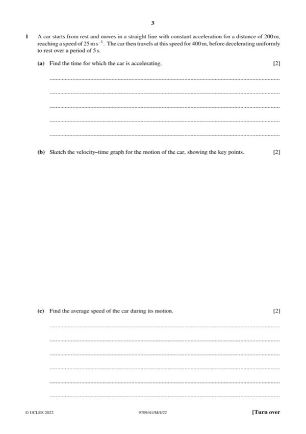
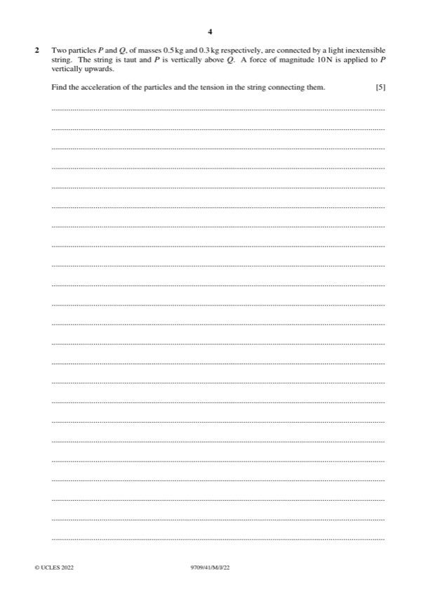
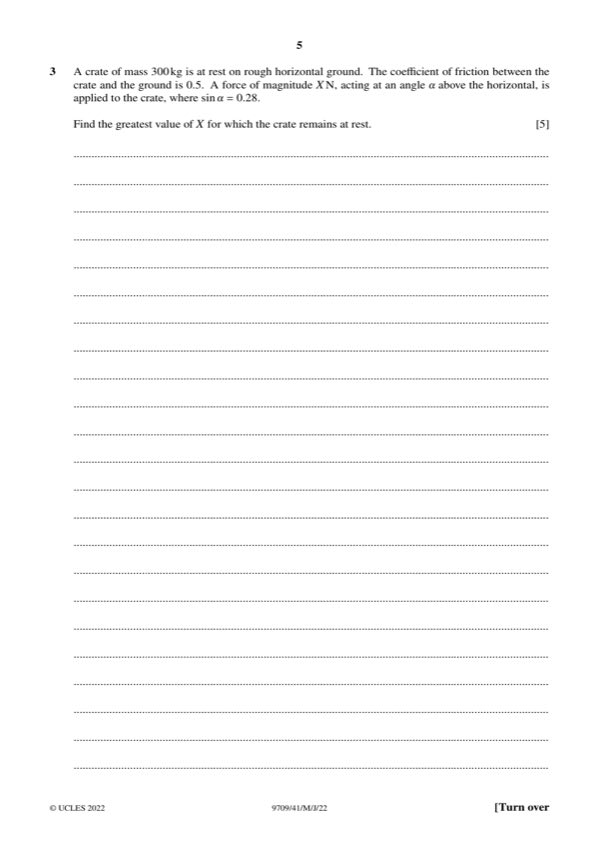
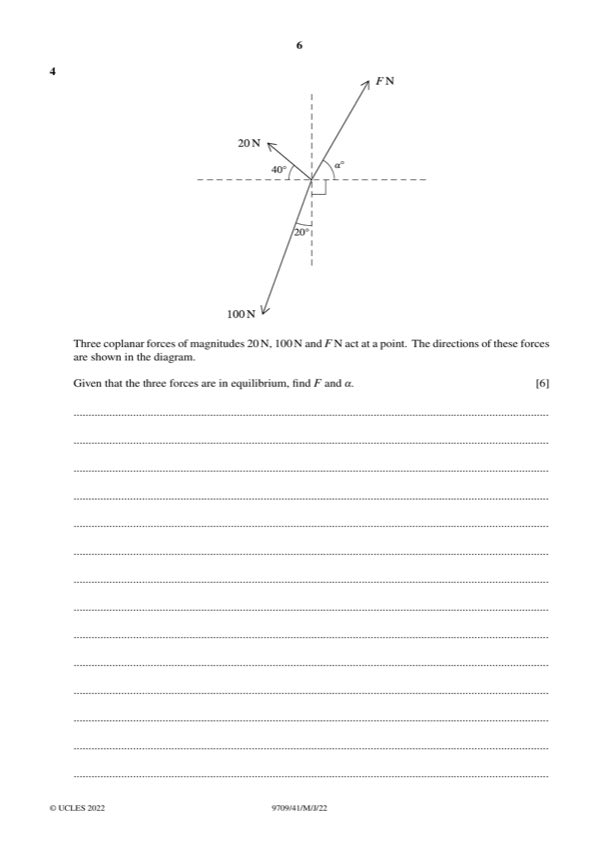
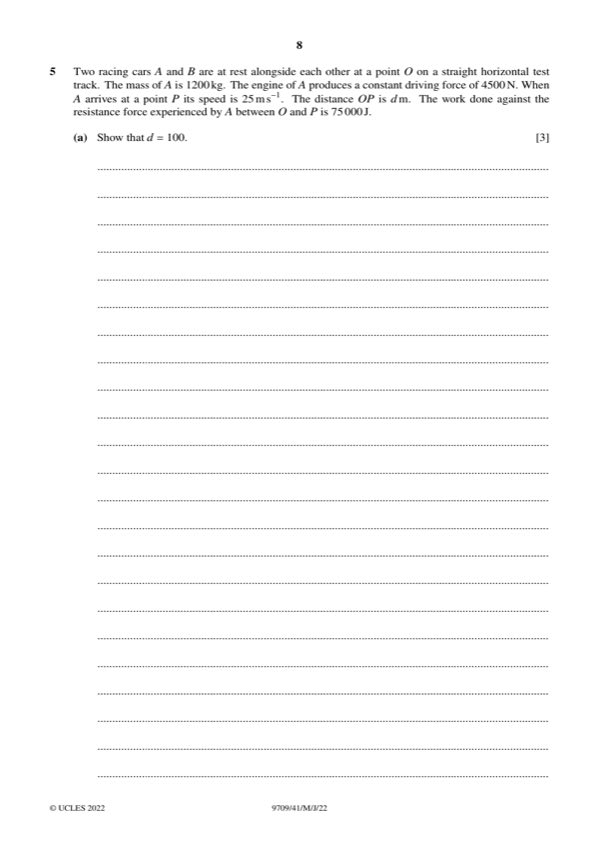
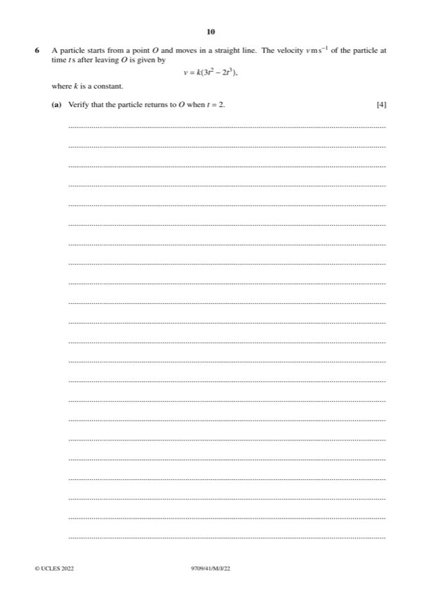
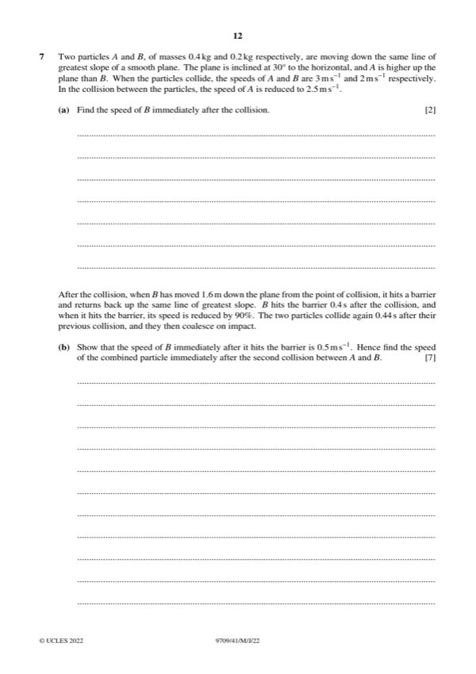

Question 0
Part 0 — solution
- [A1] AG, CWO including stating C = 0 if not using limits
Mark points
- [A1] AG, CWO including stating C = 0 if not using limits
Step-by-step solutions based on the mark scheme (not a mark-scheme dump).
Part 0 — solution

Part 1(a) — solution
Part 1 — solution
Part 1 — solution
Part 1 — solution
Part 1 — solution
Answer: 1 · OR 0.2 v 2 0.2 32 0.2 1.6 g sin 30

Part 2 — solution
Answer: 2
Part 2 — solution
Part 2 — solution
Part 2 — solution
Answer: 400
Part 2 — solution
Part 2 — solution
Part 2 — solution
Part 2 — solution
Answer: OR v u at v 3 5 0.4 v 5 uv 3v · OR: use of s t 1.6
Part 2 — solution
Answer: 2

Part 3 — solution
Part 3 — solution

Part 4 — solution
Part 4 — solution

Part 5 — solution
Part 5(a) — solution
Part 5(b) — solution
Part 5(c) — solution

Part 6(a) — solution
Part 6(b) — solution

Part 7(a) — solution
Part 7 — solution
Part 16 — solution
Answer: 16
Part 25 — solution
Part 30 — solution
Answer: 30